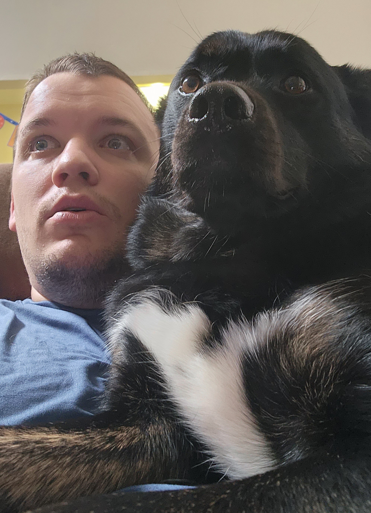

Welcome to WDD130 Web Projects
Hello My name is Spencer Johnson, Welcome to my page!
Im a Junior here at BYUI, I switch majors from Politcal Science and am wanting to work with Cyber Security
I am from Oxnard, California! Its about an Hour North of LA!
I love the outdoors! I love Camping, Hiking and being in Nature! I also Love to Play Video Games! I Play the Xbox and Switch mainly!
I am single with no children, Although I do consider My dog to be my kid because she is very high maintenance and requires alot of attention and love!
The Advantages I see about Learning Web design are that I can help create and update websites as a side job. I am taking this course to widen my understaning of Computer Languages and also to see if Web Development is somthing id like to focus on as a career! I will use this information to be more useful for my future employeer and also to better my understanding of computer systems!
I have been a Member of the Church my whole life! I served a Mission in the Honduras Comayaguela Mission. My Favorite Scripture is Ether 12:27 because it shows us that we just need to go to the lord with our weaknesses and he will help them become our strengths!
I have 2 Brothers, of which I am the Middle Child! I love Watermelon, and my Favorite Football Team is the Minnesota Vikings!